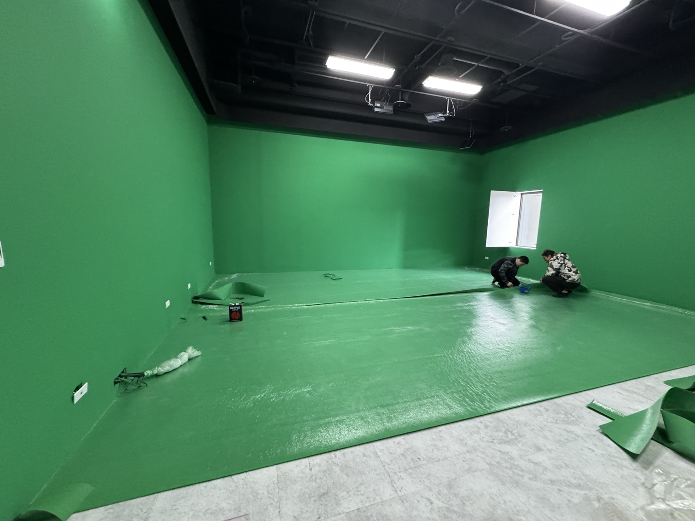

Our Services
整合系統銷售與場地租賃，讓製作流程更完整
不只是提供設備，而是協助你從拍攝環境、系統流程到實際輸出，建立穩定且可持續擴充的製播能力。

Core Strengths
適合追求穩定製播品質的品牌與團隊
系統整合能力
從攝影機、切換台、虛擬引擎到錄製與輸出，協助建立完整訊號流程。
專業拍攝環境
提供具備副控室與製播條件的場地，降低臨時搭建與設備配置成本。
商務導向規劃
依照企業直播、教育內容、活動錄製等需求，規劃更適合的系統與服務組合。
可延伸擴充
支援後續擴充更多機位、虛擬場景、錄製流程與整體製播效率升級。
Use Cases
多元應用場景
企業直播
記者會、產品發表、內部教育訓練與品牌直播。
線上課程
講師錄製、互動教學、知識型內容與數位教材製作。
節目錄製
訪談節目、論壇型內容、新聞風格錄影與虛擬場景拍攝。
品牌內容
品牌形象影片、產品講解、社群短影音與行銷內容製作。
Selected Works
案例與製作成果
企業訪談節目
以虛擬場景搭配多機錄製，提升品牌內容專業感。
線上教育課程
結合簡報、講者與場景，建立穩定的課程錄製流程。
品牌活動直播
兼顧現場空間與製播品質，支援即時直播與錄製輸出。
Product Lineup
六大核心產品模組
從虛擬製播、導播控制、字幕圖文、提詞、訊號轉換到數字人技術， 建立完整且可擴充的內容製作能力。